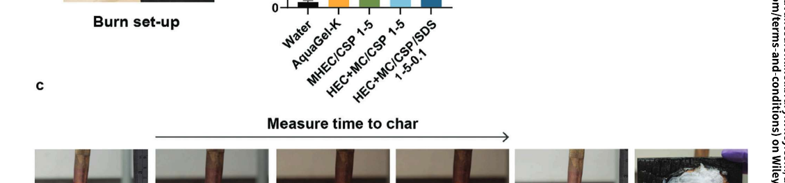
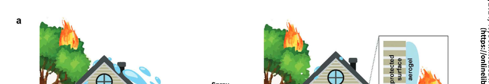
| 技術 | 主成分 | 特徴 | 限界 |
|---|---|---|---|
| 水のみ | H₂O | 蒸発潜熱による冷却 | 即座に流失・蒸発 |
| Phos-Chek | リン酸アンモニウム + 着色剤 | 樹木・地表に直接散布 | 土壌・水系への残留性 |
| AquaGel-K（市販WEG） | 架橋ポリアクリレート | 水を高濃度に保持 | 水蒸発後は保護機能消失 |
| 本研究 WEG | セルロース系 + コロイダルシリカ | 加熱でエアロゲル層を自己形成 | 水蒸発後も継続保護 |
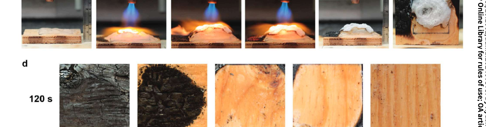
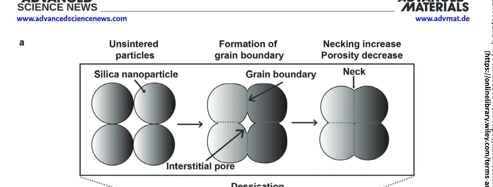
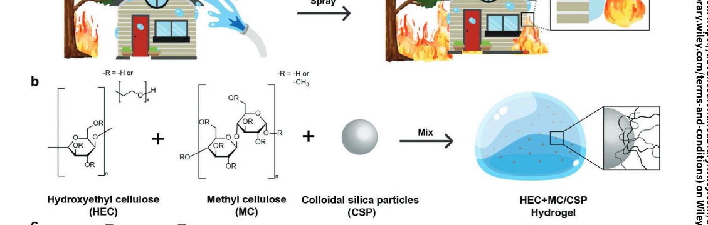
HEC+MC/CSP/SDS 1-5-0.1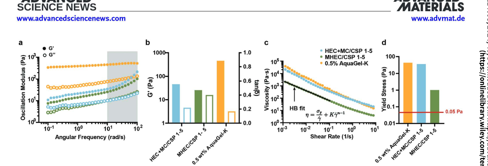
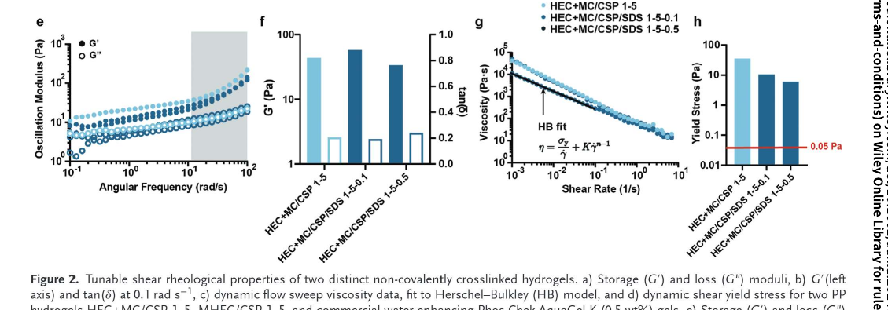
| 配合系 | τ₀ (Pa) 降伏応力 |
K (Pa·sⁿ) 稠度係数 |
n 流動指数 |
R² 適合度 |
|---|---|---|---|---|
| AquaGel-K（市販対照） | 0.31 | 0.85 | 0.52 | >0.99 |
| HEC+MC/CSP 1-5 | 0.59 | 2.04 | 0.108 | >0.99 |
| HEC+MC/CSP/SDS 1-5-0.1 | 0.54 | 1.87 | 0.115 | >0.99 |
| HEC+MC/CSP/SDS 1-5-0.5 | 0.48 | 1.65 | 0.122 | >0.99 |
| MHEC/CSP 1-5 | 0.41 | 1.43 | 0.188 | >0.99 |
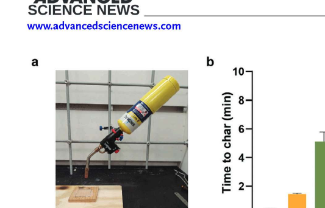
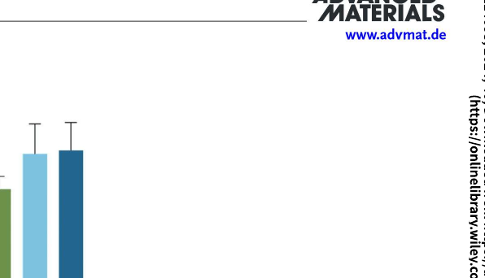
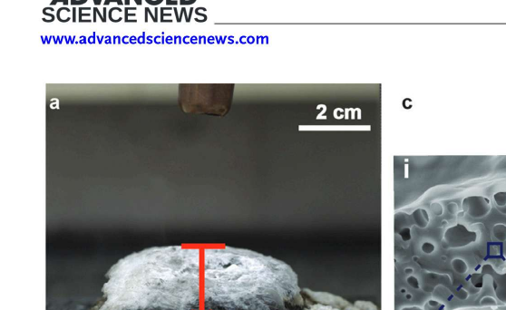
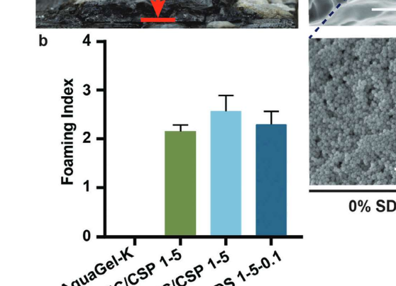
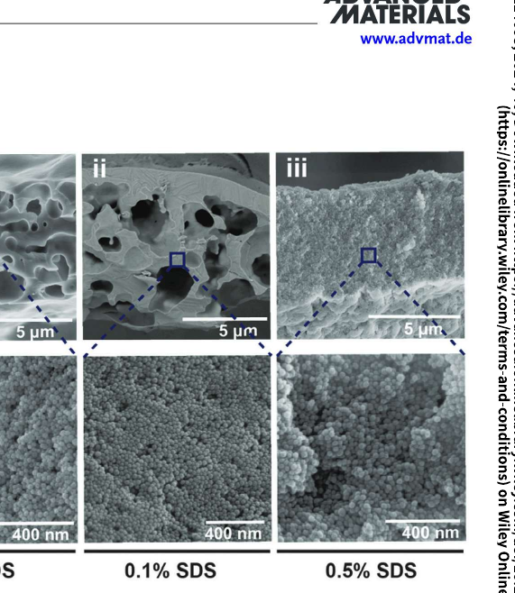
| 波数 (cm⁻¹) | 帰属 | 燃焼後の変化 |
|---|---|---|
| 3200–3500 | O–H 伸縮（セルロース・水） | → 消失（脱水） |
| 2850–2950 | C–H 伸縮（メチル基） | → 消失（有機分解） |
| 1050–1100 | Si–O–Si 伸縮（シリカ） | → 強度増大 |
| 800 | Si–O 変角振動 | → 明確化 |
| 450 | Si–O 曲げ振動 | → シャープ化 |
| 元素 | 燃焼前（WEG） | 燃焼後（エアロゲル） |
|---|---|---|
| Si 2p | ~4 | ~33 |
| C 1s | ~55 | ~8 |
| O 1s | ~41 | ~59 |
| 温度域 | イベント | ΔH |
|---|---|---|
| ~100°C | 吸熱：水の蒸発 | 吸熱 |
| ~55–80°C | 発熱：MCゲル化転移 | 微発熱 |
| ~250–300°C | 発熱：有機鎖の酸化分解 | 発熱 |
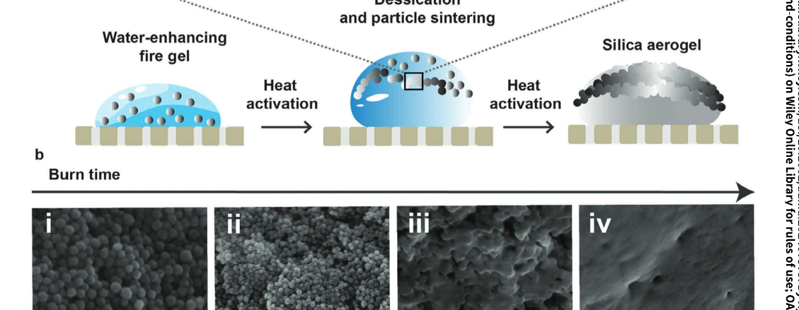
| vs 水 | 保護時間 5× 向上 |
| vs AquaGel-K | 水蒸発後も継続保護 |
| vs Phos-Chek | 土壌・水系への残留なし |
| 散布互換性 | 既存機材そのまま使用可 |